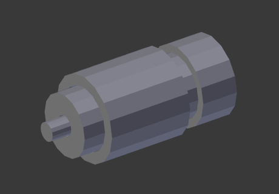
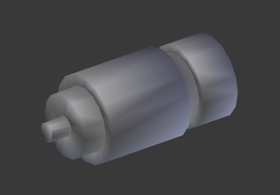
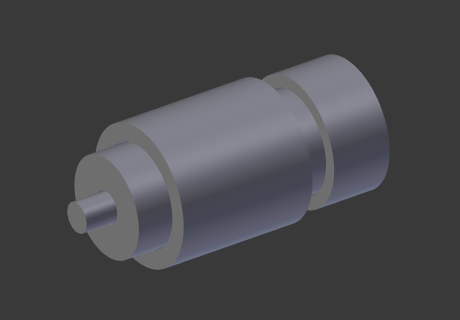

棱线分离修改器–knight翻译¶
棱线分离修改器用来分离一个网面的棱。分离的棱可以由棱角（例如，构成该棱的二面角）度决定，和/或标记为锐边的棱。
Splitting an edge affects vertex normal generation at that edge, making the edge appear sharp. Hence, this modifier can be used to achieve the same effect as Auto Smooth, making edges appear sharp when their angle is above a certain threshold. It can also be used for manual control of the smoothing process, where the user defines which edges should appear smooth or sharp (see Mesh Smoothing for other ways to do this). If desired, both modes can be active at once.
棱线分离修改器的输出可以导出到脚本，这对游戏内容制造者来说十分有用。
选项¶
棱线分离修改器。
- 棱的角度
启用该选项时，如果棱的邻接面的二面角大于 分离角度 ，棱将会分离开。
- 分离角度
- On 0: all edges are split. On 180: no edges are split.
- 棱角
启用该选项时，用 (编辑模式下的菜单快捷键:
Ctrl-E)标记为锐边的棱将会分离。
注解
非流形 的棱（被多于两个的面共享的棱）会被分离。
例子¶

Flat Shading. |

Smooth Shading. |
Smooth Shading with Edge Split. |

Smooth Shading with Edge Split and Subdivision Surface. |
注解
在编辑模式下，棱线分离修改器也可以手动用 (菜单快捷键: Ctrl-E )完成。